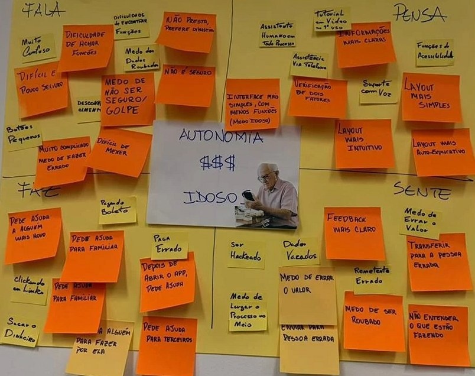

Etapa 03 de 10
Mapa de Empatia
Fizemos quatro perguntas abertas e colocamos cada resposta no quadrante correspondente. Os post-its estão do jeito que foram respondidos.
Fala
O que você costuma ouvir pessoas mais velhas falarem sobre usar aplicativos de banco, PIX ou pagar contas pelo celular?
- Botões pequenos
- Muito confuso
- Difícil e pouco seguro
- Dificuldade de achar funções
- Dificuldade de encontrar funções
- Muito complicado, medo de fazer errado
- Desconhecimento
- Difícil de mexer
- Medo dos dados roubados
- Não é seguro
- Não presta, prefere dinheiro
Pensa
O que você acha que um aplicativo bancário deveria ter para transmitir mais facilidade e segurança para idosos?
- Assistente humano em todo processo
- Tutorial em vídeo no 1º uso
- Informações mais claras
- Funções de acessibilidade
- Assistência via telefone
- Suporte com voz
- Layout mais simples
- Verificação de dois fatores
- Interface mais simples, com menos funções (modo idoso)
- Layout mais intuitivo
- Layout mais autoexplicativo
- Pra quem foi o PIX?
Faz
Quando uma pessoa idosa precisa fazer um PIX, transferência ou pagar uma conta, como você acha que ela costuma fazer hoje?
- Pede ajuda a alguém mais novo
- Clicando em links
- Sacar o dinheiro
- Pede ajuda para familiar
- Pede ajuda para familiar
- Pagando boleto
- Paga errado
- Chama alguém para fazer por ela
- Depois de abrir o app, pede ajuda
- Pede ajuda para terceiros
Sente
Quais medos ou preocupações você acha que podem surgir durante uma transação financeira pelo celular?
- Ser hackeado
- Dados vazados
- Feedback mais claro
- Medo de errar o valor
- Transferir para a pessoa errada
- Remetente errado
- Medo de largar o processo no meio
- Medo de ser roubado
- Não entender o que está fazendo
- Enviar para pessoa errada

Análise de requisitos de UX
Os requisitos saem do mapa de empatia e são confirmados pelos dados do questionário (27 respostas), pela Matriz CSD e pela análise competitiva.
Ponto de partida
O mapa de empatia mostra um usuário que quer fazer o PIX sozinho, mas sente medo de golpe e de errar o destinatário, fala de botões pequenos e confusão e, por isso, faz o que é mais seguro para ele: chama um familiar ou desiste. Os requisitos a seguir partem dessas tensões.
Requisitos funcionais
| # | Requisito | Origem no mapa de empatia | Evidência na pesquisa |
|---|---|---|---|
| RF01 | Tela de revisão obrigatória com nome, banco e valor antes de confirmar | Sente: medo de enviar para a pessoa errada Faz: paga errado |
Confirmação mais clara foi o recurso mais pedido (14) |
| RF02 | Permitir voltar e corrigir em qualquer etapa sem perder os dados | Sente: medo de abandonar o processo no meio Fala: medo de errar |
Medo de errar é o 2º motivo para evitar o app (6) |
| RF03 | Ajuda contextual em cada tela, em linguagem simples | Pensa: tutorial no primeiro uso, assistente Faz: pede ajuda a alguém |
Explicação no próprio app é a ajuda preferida (10) |
| RF04 | Tela inicial com poucas funções: PIX, saldo, pagar conta e ajuda | Pensa: layout mais simples, modo idoso | Saldo (26) e PIX (18) são as operações mais usadas; modo simplificado (10) |
| RF05 | Mensagens de erro que explicam o problema e como corrigi-lo | Fala: confusão, desconhecimento | Ideia extraída da análise competitiva |
| RF06 | Sinais de segurança visíveis e alerta em situações de risco | Sente: medo de ser hackeado e de vazamento Fala: “não é seguro” |
Golpe é o principal motivo para evitar o app (7); alertas contra golpes (11) |
| RF07 | Autorização por biometria, sem senha difícil de lembrar | Pensa: verificação em dois fatores | Digital (9) e biometria facial (5) preferidas à senha (4) |
| RF08 | Comprovante claro ao final, com opção de voltar ao início | Sente: insegurança sobre o resultado | Feedback reduz a necessidade de conferir com terceiros |
| RF09 | (Desejável) Instruções por voz com leitura dos dados antes do envio | Pensa: assistente | 33,3% sim e 48,1% talvez: validar antes de priorizar |
Requisitos não funcionais
| # | Categoria | Descrição e justificativa |
|---|---|---|
| RNF01 | Acessibilidade motora | Botões de no mínimo 48×48 dp e bem espaçados. Responde a “botões pequenos” (Fala) e ao pedido por textos e botões maiores (12). |
| RNF02 | Acessibilidade visual | Fonte grande sem serifa, alto contraste e cor sempre acompanhada de texto ou ícone. |
| RNF03 | Linguagem | Português simples, sem termos em inglês nem jargão bancário. Responde a “confusão” e “desconhecimento” (Fala). |
| RNF04 | Carga cognitiva | Uma decisão por tela e fluxo em etapas curtas, considerando a memória de curto prazo mais frágil (Matriz CSD). |
| RNF05 | Confiança | Visual sóbrio e consistente, sem animações ou carrosséis que causem desorientação. |
| RNF06 | Autonomia | O fluxo deve ser concluído sem ajuda de terceiros. Meta baseada nos 51,9% que fariam sozinhos com um app mais simples. |
Restrições do projeto
Protótipo acadêmico, sem integração bancária real, sem coleta de dados pessoais e sem uso de marcas de bancos existentes.
Priorização
| Prioridade | Requisitos | Motivo |
|---|---|---|
| Essencial | RF01, RF02, RF04, RF06 e todos os RNFs | Atacam diretamente o medo de errar, o medo de golpe e a dependência de familiares. |
| Importante | RF03, RF05, RF07, RF08 | Reforçam a autonomia e a confiança durante e após a tarefa. |
| Desejável | RF09 | Interesse moderado na pesquisa; depende de validação com usuários. |